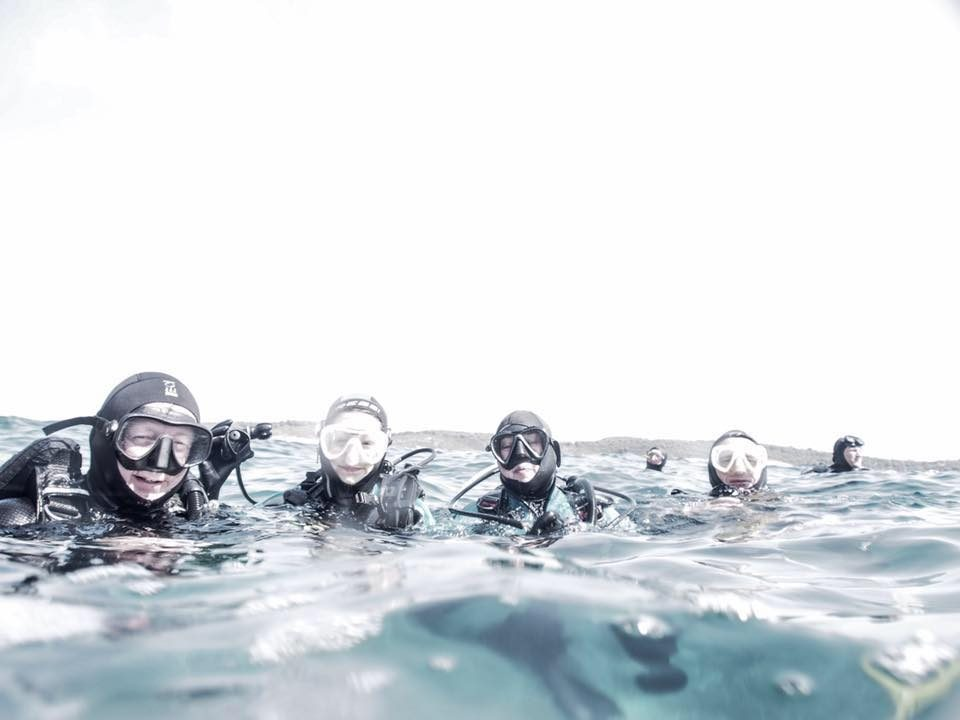
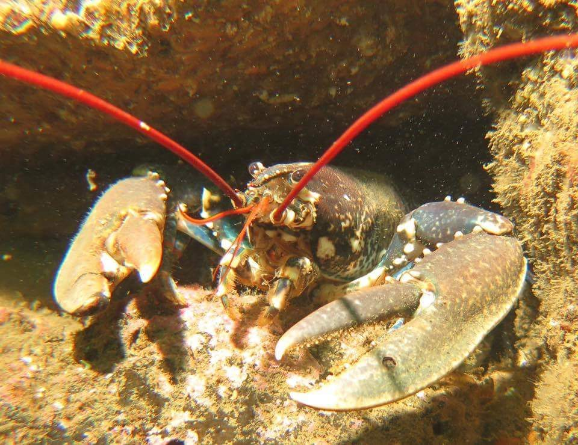
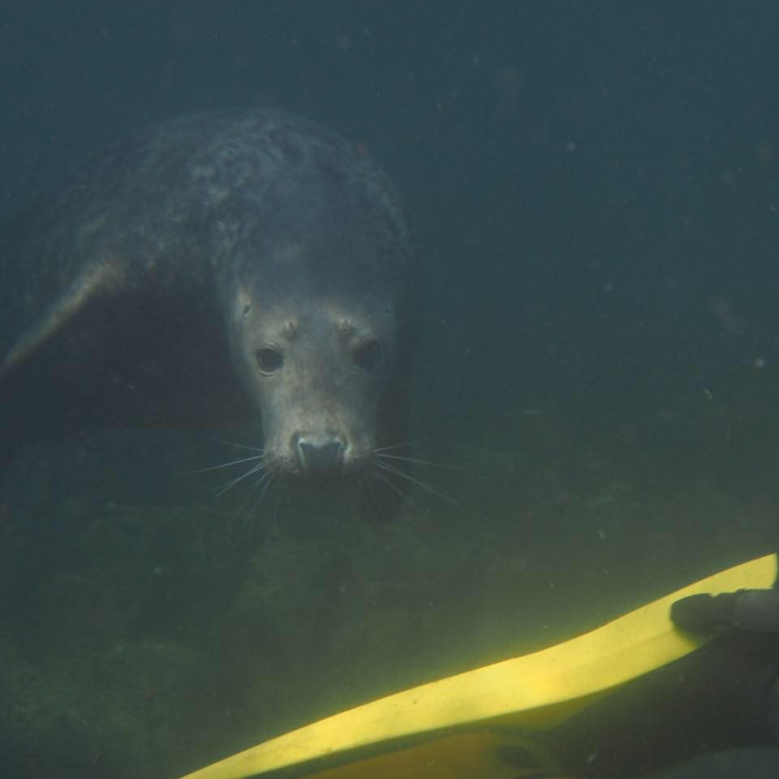
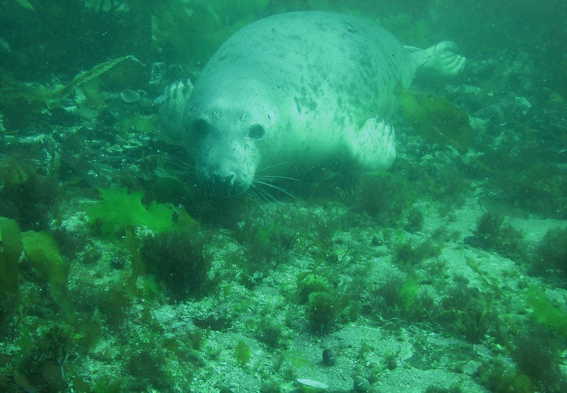
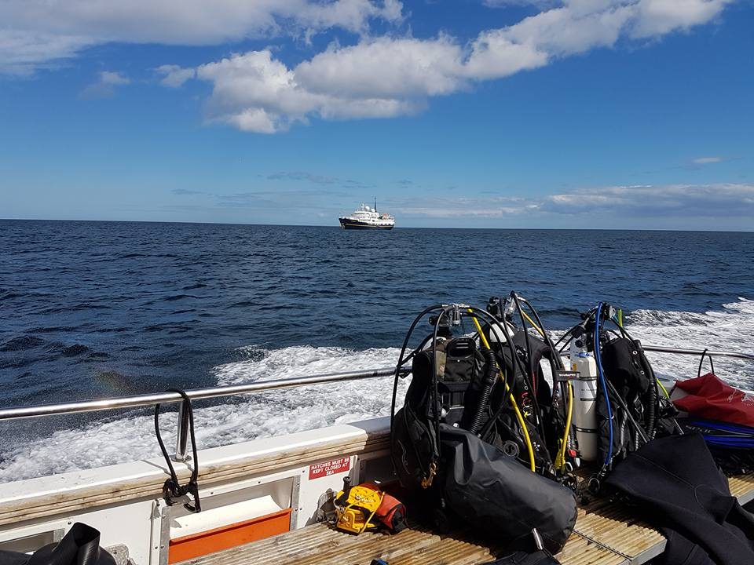

Farne Islands and Eyemouth, August 2016

In late summer a large contingent of Argonauts (and friends) headed up to the Northumberland coast for a week of fantastic cold water diving. The Farnes are home to one of the largest grey seal colonies as well as a wide variety of birds.
The conditions didn't disappoint, with dozens of close encounters with seals, huge lobsters, wolf fish, octopus, crabs and vast walls of coral. For several in the group, it was the first big diving trip after qualifying as Ocean Divers - and it set the bar high!
Here's a few photographs from the trip:



